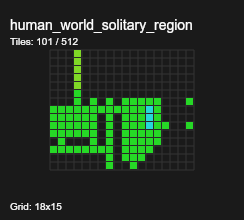

When multiple objects are at the same position (within 1 pixel), they are now displayed with a marker system:
This area has 8 grid positions with overlapping tiles. Look for yellow-bordered circles with *1, *2, etc. markers.
Overlap Detection:
Legend Positioning: